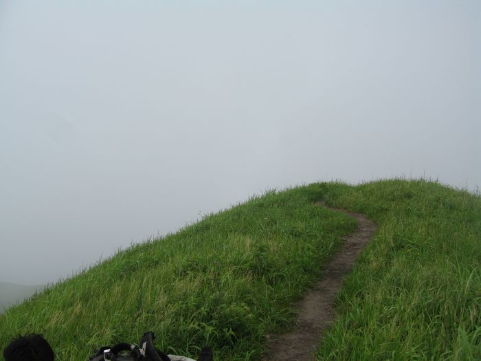
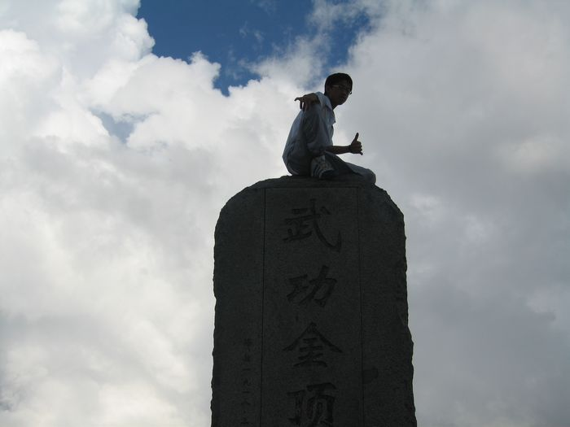
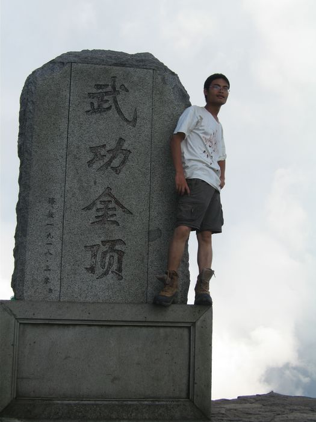

发信人: billyxs (into the wild), 信区: outdoor
标 题: 我为你翻山越岭——再说武功(完) yanhao (转载)
发信站: 饮水思源 (2012年10月25日20:49:06 星期四), 站内信件
【 以下文字转载自 outdoor 讨论区 】
【 原文由 yanhao 于 2010年08月25日00:02:50 星期三 发表 】
【 原文链接 】
留校过暑假，暑假，也就紧紧慢慢地过了…不同的时候看武功，总会有不同的心情感悟，
在对沈家大院冰镇苹果的渴望中，最热的夏天也一点点过去，只是在空调吹得头痛的时候
，会怀念山脊草甸的水汽，会怀念四个人在山脚、山腰、山顶休息时，急促的呼吸和绵延
的绝望和希望。
screen.width - 200){this.width = screen.width - 200}">
上回说到羊狮幕的鹰，运气而飞。告别羊狮幕，便开始了绵延的密林穿越了。中途迷了一
次路，沿着一条新开的伐木小道下探了很深，听到山泉的一刹那，便知道这条错路的悲剧
…顺利走上山脊之后的风光并不特别，只是密林加陡坡，埋没了身影，只有时不时的一声
呼喊，在回声里缭绕。常常会有这样的一种想象，背包客在山里寻找着风景，翻山越岭，
然后镜头一点点拉远，在辽阔的背景下，背包客也便成为了天地间的一道风景，而这成为
风景的感觉，真好~
screen.width - 200){this.width = screen.width - 200}">
密林与草甸的衔接，很自然，却也很突兀，蓦地脱离了羁绊的枝枝桠桠刚开始的草甸，夹
带着几簇矮树，贴着几块赤裸的黄土的伤痕，显得有点胆怯和羞涩。近处几处废弃的遗址
，联想到之前攻略所说的钨矿，也便简单的用水泼了泼脸，不曾敢喝。而第二天的行程也
就这样划下了句点。
screen.width - 200){this.width = screen.width - 200}">
screen.width - 200){this.width = screen.width - 200}">
法云寺的小破石屋不再寂寞地被几间新建的客栈包围着，寺里的和尚下山回家了，说是不
想待了，第二天再递过营地费的一刹那，不辨真假。HYP特别交待过的猫，用一晚的春叫欢
迎了我们，难道把迪卡侬的三人帐当成了巨大的异性生物？一大早四人想好好关照关照它
的，结果再看不到身影了…
screen.width - 200){this.width = screen.width - 200}">
screen.width - 200){this.width = screen.width - 200}">
于是开始了第三天，十公里的草甸。当地人说，本地青年，四到五小时可以穿越。我就想
，那我们就用四个小时穿了它！结果，我错了…
screen.width - 200){this.width = screen.width - 200}">
screen.width - 200){this.width = screen.width - 200}">
武功山十万顷草甸，放眼过去的层峦叠嶂，皮肤肌理，都是细腻的青绿起伏，山脉东西走
向延伸，始于天的尽头，终于天的尽头，而人处在天地之间，唯天、唯地、唯人。一条一
人可行的土径暴露在绿野之中，有些突兀，却也有些深沉，像是联系着群山的一条黄练，
传递着此地彼处的信息，荡漾着此地彼处的脉动，而山为一体，天地之为一线。
screen.width - 200){this.width = screen.width - 200}">
screen.width - 200){this.width = screen.width - 200}">
草甸尽是及膝的芒草，或阴或晴的天空下，变幻着不同的绿色，而时有彩蝶翩飞，多是雌
雄双飞，更给这天地添起一份温存与感动。行走于山脊草甸之间，六七十度的坡上坡下，
不胜言语，只是脚踏实地的一步一步，四人一队，也无言。更多的是汗水泼湿了脸，模糊
了双眼，却无暇擦拭，一点点额外的动作，似乎都会打破这已成的协调，这脚步、汗水、
喘息所成的和谐，从未用如此小的步伐，如此慢的节奏去攀登，突然意识到，这，该就是
攀登。
screen.width - 200){this.width = screen.width - 200}">
screen.width - 200){this.width = screen.width - 200}">
screen.width - 200){this.width = screen.width - 200}">
screen.width - 200){this.width = screen.width - 200}">
screen.width - 200){this.width = screen.width - 200}">
screen.width - 200){this.width = screen.width - 200}">
screen.width - 200){this.width = screen.width - 200}">
阴晴风雨，也独自在这山里演绎，坐在山顶的时候，看着山脚的水汽或缓慢或急速地上升
，越过山脊，从我们身旁经过，人也便沐浴在云海里，徜徉在仙境中，一点点释放，一点
点吸纳。午饭是在山顶旁突出的岩石上吃的，看着前方更高百丈的山体积蓄力量。而当坚
实或沉重的脚步越过这座高山的时候，回首一看，当时的岩石在远处的下方静静的伸出，
孤立而奇突地仰望，梦里想来，尚如仙境。
screen.width - 200){this.width = screen.width - 200}">
 screen.width - 200){this.width = screen.width - 200}">
screen.width - 200){this.width = screen.width - 200}">
screen.width - 200){this.width = screen.width - 200}">
而在远山遥望的山尖，云海深处的蓝天下，蓦然现出的蜃景，也便完成了对此行最为奢侈
的愿望。蜃景如一幅水网交织的水墨画，清晰地勾勒出每一个细节。在绿意的群山之上，
云海翻腾之间，突出的这块绿洲，却更如桃源般悠秘，在天边，构筑起一个美丽的梦~而我
们也在第四天的归途中重见了这片绿洲，是不远处兴建的水库~
screen.width - 200){this.width = screen.width - 200}">
而草甸也在这漫长和惊喜中一点点走向终点，走过的路，也处处留下了我们的印迹，留下
了永久的纪念。而武功山金顶相比却不曾留下深刻的记忆，只是及至山顶时四人喝掉的两
瓶营养快线，总在梦里美滋滋的出现，绝处逢生般地畅饮啊~
screen.width - 200){this.width = screen.width - 200}">
screen.width - 200){this.width = screen.width - 200}">
screen.width - 200){this.width = screen.width - 200}">
screen.width - 200){this.width = screen.width - 200}">
没能见到icer时常说到的白云客栈的小破屋，却已然翻新重建了，当晚有另一队长沙来的
旅游团住店，突然地大雨打破了他们初住帐篷的兴奋，却让我们在手忙脚乱中完成了帐篷
里的晚餐，偶尔探出头的一刹那，看到漫天的星星，在雨中，却又是别样的一番体会。
而武功山也就在这山、这水、这鱼、这鹰、这蝶、这草、这星中，静静的成为这个夏天最
美好的回忆，静静的躺在梦里，不时回首，也总能触碰到那山涧里娃娃鱼滑嫩嫩的小爪子
，总能再吹到山顶草甸上涌的水汽云气，再看一眼这山、再饮一口这水，再说武功，再忆
武功！…
screen.width - 200){this.width = screen.width - 200}">
screen.width - 200){this.width = screen.width - 200}">
screen.width - 200){this.width = screen.width - 200}">
screen.width - 200){this.width = screen.width - 200}">
screen.width - 200){this.width = screen.width - 200}">
screen.width - 200){this.width = screen.width - 200}">
screen.width - 200){this.width = screen.width - 200}">
screen.width - 200){this.width = screen.width - 200}">
screen.width - 200){this.width = screen.width - 200}">
screen.width - 200){this.width = screen.width - 200}">
 screen.width - 200){this.width = screen.width - 200}">
screen.width - 200){this.width = screen.width - 200}">
screen.width - 200){this.width = screen.width - 200}">
 screen.width - 200){this.width = screen.width - 200}">
screen.width - 200){this.width = screen.width - 200}">
--
※ 来源:·饮水思源 bbs.sjtu.edu.cn·[FROM: 59.78.57.99]
--
※ 转载:·饮水思源 bbs.sjtu.edu.cn·[FROM: 219.228.113.248]
|